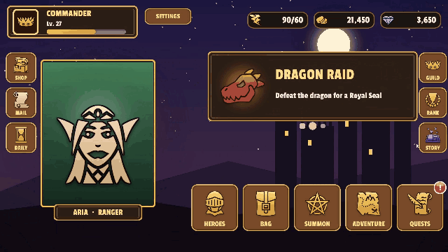

Playing and Awaiting
KeyTween lives in the KeyTweening namespace, and the component you add to a GameObject is KeyTween.
Animations are made in the editor as states (Guide). A state is one named animation, built from tracks and keys. From code, you play a state by name and await it.
The KeyTween component provides methods to play and control a state by its name.
public sealed class KeyTween : MonoBehaviour
{
public void Play(string stateName); // takes one argument, so it is also listed in UnityEvents such as Button OnClick
public void Play(string stateName, PointerEventData pointer); // for Start = Pointer tracks (where the pointer was pressed)
public void Play(string stateName, float time); // plays from that time (seconds)
public Awaitable PlayAsync(string stateName, CancellationToken cancellationToken = default);
public Awaitable PlayAsync(string stateName, float time, CancellationToken cancellationToken = default);
public void PlayReversed(string stateName); // also listed in UnityEvents
public void PlayReversed(string stateName, float time); // from that time back to 0 s
public Awaitable PlayReversedAsync(string stateName, CancellationToken cancellationToken = default);
public Awaitable PlayReversedAsync(string stateName, float time, CancellationToken cancellationToken = default);
public void Complete(string stateName); // jumps a playing state to its end
public void Stop(string stateName); // stops the state where it is
public void Stop(string stateName, float time); // stops it and shows the pose at that time (without playing)
public KeyTweenPlay With(string stateName); // sets up one play in code ("Setting Up a Play in Code")
public KeyTweenStateBuilder Build(string stateName); // makes a state in code ("Making a State in Code")
public bool IsPlaying(string stateName);
public bool HasState(string stateName);
public float Duration(string stateName); // length including overrides; 0 if there is no such state
}
| Method | Behavior |
|---|---|
Play |
Starts playing. With a time, plays from that time. |
PlayAsync |
Starts playing and waits until the play ends. |
PlayReversed |
Plays from the end (or the given time) back to the start. |
Complete |
Jumps a playing state to its end pose. |
Stop |
Stops the state where it is. With a time, stops it and shows the pose at that time. |
Times are in seconds on the state's timeline (the same unit as Duration). A time below 0 or past the length is clamped to 0 or the end.
Playing a State
Play starts playing and writes the first pose (0 s) immediately. If the state name does not exist, it only logs a warning.
anim.Play("Open");
If the state has Start = Pointer tracks, also pass pointer. The tracks use it to know where the pointer was pressed.
public void OnPointerDown(PointerEventData eventData) => anim.Play("Press", eventData);
Awaiting a Play
PlayAsync completes when the play reaches the end or when Complete is called.
await anim.PlayAsync("Open", destroyCancellationToken);
- If the play cannot finish, it ends with
OperationCanceledException. For details, see How a Play Ends. - If the state does not exist, it completes immediately.
- It returns a Unity
Awaitable, so you can await it only once. - For a looping state,
PlayAsyncdoes not end until you callCompleteorStop.
Playing from a Given Time
Pass a time to Play or PlayAsync to play from that time. The pose at that time is written at once, and only the rest of the state plays.
anim.Play("Intro", 1.5f); // from 1.5 s
await anim.PlayAsync("Intro", 1.5f, destroyCancellationToken);
- Events, sounds and child calls before that time are not raised. Those exactly at the start time are raised, as those at 0 s are when playing from 0 s.
- Pass a time to
PlayReversedorPlayReversedAsyncto play from that time back toward 0 s.
Playing in Reverse
PlayReversed plays from the end back to the start. To wait until it ends, use PlayReversedAsync.
await anim.PlayReversedAsync("Open"); // returns to where the forward play started
- Events, sounds and child calls are each raised once, in reverse order.
- Child states also play reversed.
- Start = Current Value tracks reuse the value captured by the last forward play. So a reversed play returns exactly to where the forward play started.
- The end values are also those of the last forward play. If the forward play was
With(...).WithEndValue(...), a plainPlayReversedcomes back from that end value. To give a reversed play another end value, useWith(...).WithEndValue(...).PlayReversed().
Completing a Play
Complete moves a playing state to its end pose and completes PlayAsync normally. It works only while the state is playing.
anim.Complete("Open");
- The remaining events and child calls are raised in order.
- Remaining sounds are not played.
- During a reversed play, it moves to the start pose instead.
Stopping a Play
Stop stops the state where it is. A pending PlayAsync is canceled. Use it to turn off a looping state.
anim.Stop("Idle");
Stopping at a Given Time
Pass a time to Stop to stop the state if it is playing (a pending PlayAsync is canceled) and write its pose at that time. It writes the pose even when the state is not playing.
anim.Stop("Open", anim.Duration("Open")); // straight to the end pose, without animation
anim.Stop("Reveal", progress * anim.Duration("Reveal")); // every frame from a value such as a scroll position (progress: 0 to 1)
- No timer runs, and no events or sounds are raised.
- You can call it every frame to drive the pose with something other than time, such as a scroll position or a pull distance.
- The old name
Sample(state, time)still does the same but is[Obsolete]and will be removed in the next version.
Checking a State
Use IsPlaying, HasState and Duration to check a state. Duration is the length including overrides, and 0 if there is no such state.
if (anim.HasState("Open") && !anim.IsPlaying("Open")) anim.Play("Open");
Play Time
Each KeyTween's Time (timeMode) decides whether playback follows Time.timeScale.
| Time | Clock | Use |
|---|---|---|
Scaled (default) |
Game time. Stops while Time.timeScale is 0 |
Game objects, battle effects |
Unscaled |
Real time. Keeps playing while the game is paused | Pause menus, loading screens |
pauseMenu.timeMode = KeyTweenTimeMode.Unscaled; // applies from the next play
- It can be overridden per prefab instance. For example, keep a shared button
Unscaledand switch only the buttons placed on the game screen toScaled. - A state played by a child call follows the child KeyTween's Time.
- Outside Play mode (playing from code in the editor), both use real time.
When States Overlap
If another playing state is animating the same property, the new state takes over only that property, from its current value. To let the earlier state reach its end pose first, call Complete before playing.
anim.Complete("earlier state");
anim.Play("next state");
For details, see Guide §11.
How a Play Ends
The table below shows how PlayAsync ends in each case, and what happens to the events and sounds that have not been reached yet.
| Case | PlayAsync result |
Callback | Remaining events | Remaining sounds |
|---|---|---|---|---|
| Reaches the end | completes | On Complete | all raised | all played |
Complete called |
completes | On Complete | raised in order | not played |
| Another state takes all of its properties | canceled | On Cancel | not raised | not played |
| The same state is played again | earlier play canceled | the earlier play's On Cancel | not raised | not played |
| Object disabled | canceled | On Cancel | not raised | not played |
Stop called, token canceled |
canceled | On Cancel | not raised | not played |
A play that does not reach its end ends as canceled. This makes "continue only when the play really finished" the default behavior.
Start and End Callbacks
You can receive the start and end of a play without await. Connect them per state in Callbacks in the editor (On Start, On Complete, On Cancel, see the Guide), or receive every state through the component's events in code.
public event Action<string> StateStarted; // the state's name. After the first pose, before the events at the start time
public event Action<string> StateCompleted; // reached the end, or Complete. Before PlayAsync completes
public event Action<string> StateCanceled; // did not reach the end (the table above)
anim.StateCompleted += state => { if (state == "Close") gameObject.SetActive(false); };
- Each play starts with
StateStartedand ends with exactly one ofStateCompletedandStateCanceled. - At the same moment, the state's UnityEvent (On Start and so on) is called first, then the component's event.
- A callback that throws is logged, and the play and the other callbacks go on.
- Stopping the state inside its On Start means the play does not start, and its
PlayAsyncis canceled. Stop(state, time), which writes a pose without playing, and the editor preview call no callbacks.
Example: Closing a Popup
If the popup is opened again while it is closing, the close play is canceled and the popup is not destroyed.
try { await popup.PlayAsync("Close", cancellationToken: popup.destroyCancellationToken); }
catch (OperationCanceledException) { return; } // Open took over Close's properties, so keep the popup
Destroy(popup.gameObject);
Example: A Dialogue Box
Change the text of the same TMP object and play the same state again. To skip, call Complete. The character count is read again on each play, so the animation follows the new line.
dialogue.text = nextLine;
var typing = anim.PlayAsync("Typewriter");
// skip button: anim.Complete("Typewriter");
await typing;
The story screen of the RPG sample shows its lines one character at a time in this way.
